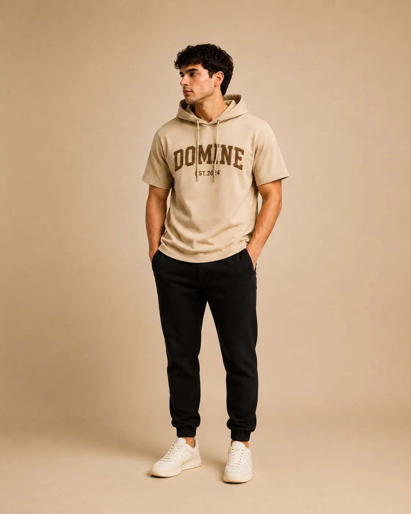

Brief interpretation
Review design references, intended customer, target quality, construction and unresolved details.
From concept to approval
Move from a reference, sketch or tech pack to materials, prototypes, fit comments and a production-ready handover—while keeping revisions traceable.

Development scope
The development route changes by product. The goal is to close important technical and commercial questions before bulk production.
Review design references, intended customer, target quality, construction and unresolved details.
Coordinate relevant options for composition, weight, structure, colour, hand feel, labels and accessories.
Prepare the sample request with the measurements, materials and construction information available.
Organise comments on measurements, balance, shape, construction details and visible workmanship.
Consolidate buyer feedback so each round has clear changes and an identifiable approval status.
Align the approved sample, specification, material details and commercial requirements for bulk planning.
Sample process
Sample names and requirements can vary by buyer. Agree the purpose, inputs and approval authority for every round.
Tests the initial interpretation of the design, materials and construction.
Applies consolidated comments to measurements, proportion and shape.
Confirms the required shade, print, embroidery, wash or other surface treatment.
Records the version accepted for the next commercial or production decision.
Checks production materials and specifications before bulk work begins.
Keeps approved samples and comments connected to the final order information.
Development checklist
Not every item must be final at the beginning, but open points should be visible and assigned for decision.
| Design | Technical sketch, reference image, style details and intended product use. |
|---|---|
| Measurements | Base size, size chart, tolerance expectations and fit reference when available. |
| Materials | Composition, fabric weight, structure, colour, finish, trims and labels. |
| Decoration | Artwork, dimensions, placement, colours and technique requirements. |
| Commercial | Target quantity, destination, target timing and packaging needs. |
| Approval | Who comments, how comments are consolidated and what confirms approval. |
Connected services
Common questions
Yes, but a reference image does not contain all technical details. Measurements, materials, construction, artwork and quality expectations still need to be defined.
That depends on the product complexity, completeness of the first brief, material availability and the clarity and speed of buyer comments.
No. Bulk production should begin only after the buyer and sourcing team align the approved sample, specifications, materials, commercial terms and production plan.
Send your reference, tech pack or sketch together with the quantity, destination and required date.